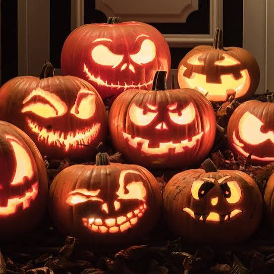

The Pumpkin Carving Coven
Carve a little October magic
Trade ideas, shape a jack-o'-lantern, and share the glow. The carving table is open to every curious soul, from first-timers to seasoned pumpkin artists.

A little craft, a little magic
A Night at the Carving Table
Choose Your Pumpkin
Round, lopsided, tiny, or enormous: every pumpkin has the makings of a one-of-a-kind lantern.
Make It Your Own
Swap patterns and ideas with the coven, then carve a classic grin or invent something delightfully strange.
Share the Glow
When the carving is done, set your lantern aglow and admire the whole coven's creations together.
Choose a pattern. Light the lantern.
Pumpkin Carving
Choose a design
0 of 3 cuts carved
Bring your pumpkin. Find your people.
There's no perfect way to carve one. Bring a pumpkin, a design idea, and a willingness to get a little messy. The best part is making something by moonlight, side by side.
Explore Midnight HarvestPack for the carving table
- A pumpkin that speaks to you
- Carving tools you like to use
- A pattern, sketch, or wild idea
- Clothes ready for pumpkin seeds